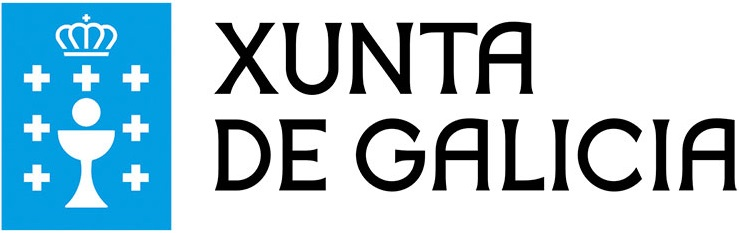

son embarcacións de pesca galega (Ver imaxe máis grande).
son embarcacións de pesca galega (Ver imaxe máis grande).Pódese ter máis información sobre os estudos de FP relacionados coa familia profesional de Informática e Comunicacións na páxina oficial da 
As gamelas son embarcacións de pesca galega (Ver imaxe máis grande).